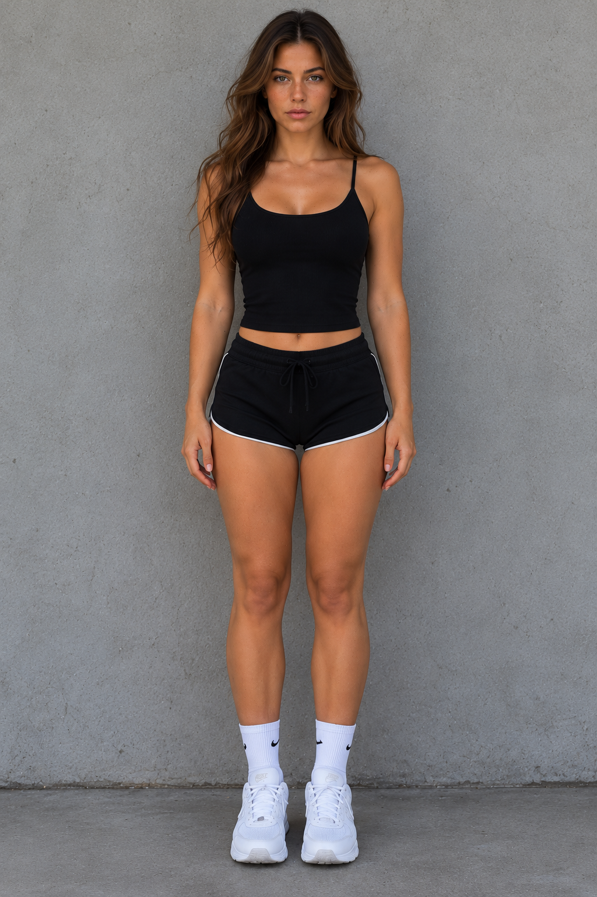

NEXUS-v2; bir tarayıcı sekmesindeki yapay zekâ kutusu değildir. Windows masaüstünüzde sizinle çalışan, doğal Türkçe konuşan, konuşmaları hatırlayan, izin verdiğiniz web ve bilgisayar görevlerini yürüten ve merkezinde fotogerçekçi NEXUS-01 dijital insanını barındıran kişisel işletim katmanıdır.
ChatGPT veya Gemini gibi harici modeller "NEXUS'un kendisi" değildir; NEXUS'un gerektiğinde kullandığı değiştirilebilir akıl yürütme kaynaklarıdır. Asıl fark, masaüstünüzdeki tam kontrol ve yerel güçtür.
Kullanıcımız statik bir fotoğraf veya çizgi film karakteri istemedi. NEXUS-01; onaylı tekil kimliğiyle (`1000321941`), doğal göz kırpan, konuşurken dudakları Türkçe sesle senkron hareket eden yaşayan bir dijital insandır.
Mikrofonunuza konuştuğunuz anda kelimeleri anlar. Viseme motoru sayesinde dudak ve çene hareketleri Türkçe ses dalgalarıyla gecikmesiz senkronize olur.
Dinlerken odaklanır, onaylarken tebessüm eder, karmaşık veri ve görev analizlerinde düşünce moduna geçer. Mekanik değil, canlı bir varlık hissi verir.

TAM VÜCUT VARLIĞIMasaüstünüzde pencerelerin yanında konumlanır. Web araştırmalarınızı yaparken, raporlarınızı incelerken daima yanınızda duran profesyonel bir çalışma partneri.
Yapay zeka filtrelerinin aşırı pürüzsüz plastik hissi yerine; gerçek mikro gözenekler, doğal ela/yeşil iris derinliği ve ışık kırılmalarıyla tasarlanmış özgün bir varlık.
Kullanıcı niyetini anlayan, doğrulayan ve güvenli biçimde yürüten 6 ana modüler katman.
NEXUS-01'in kalıcı fotogerçekçi görünümü, ses tonu, doğal Türkçe akıcılığı, konuşurken araya girilebilirlik (barge-in) ve viseme dudak senkronu.
Kullanıcıya ait veriler yerel SQLite veritabanında tarih ve kaynak bilgisiyle saklanır. Şeffaftır; istediğiniz an görüntüleyebilir, düzeltebilir veya silebilirsiniz.
Doğal dille verilen hedefleri alt adımlara böler. Web araştırması, dosya okuma ve sistem işlemlerini gerçek kanıtlarla yürüten güvenli görev motoru.
Tek bir sağlayıcıya mahkum değilsiniz. Yerel Ollama modelleri, OpenAI, Claude veya Gemini arasında akıllı geçiş yapar; çevrimdışıyken bile çalışır.
LLM'ler sistemde nihai otorite değildir. Kritik dosya, web ve sistem işlemlerinde Rust çekirdeği açık kullanıcı onayı ister; onay verilmezse işlem anında durur.
Yapay zekanın ürettiği sonuçlar doğrulanmadan tamamlandı sayılmaz. Üretilen her dosya, özet veya veri çıktısı doğrulanabilir kanıtlarla raporlanır.
NEXUS statik bir kontrol paneli değildir. O anki ihtiyacınıza göre arayüz akıllıca şekil değiştirir.
NEXUS-01 ve doğal sesli diyalog ekranın merkezindedir. Tüm karmaşık paneller gizlenir. Tıpkı karşınızda oturan gerçek bir insanla sohbet eder gibi saf bir asistan deneyimi.
NEXUS bir görev yürütürken (araştırma, dosya inceleme, veri sentezi); gerçek görev ilerlemesi, hafıza kayıtları ve onay pencereleri dinamik paneller olarak açılır.
Masaüstünüzde kod yazarken, rapor hazırlarken veya tarayıcıda gezinirken ekranınızı kaplamayan, köşede sessizce bekleyen ve tek tuşla yardıma koşan hafif mod.
Yapay zekâ modellerine körü körüne güvenilmez. Güvenlik kuralları işletim sistemi ve Rust çekirdeği düzeyinde zorlanır.
Güvenlik kontrollerini devre dışı bırakan gizli arka kapılar veya geçici yamalar yasaktır. Testi geçirmek için güvenlik kuralları gevşetilmez.
Kamera kapalıyken "seni görüyorum" demek kesinlikle yasaktır. Mikrofon sadece açıkça konuşmak istediğinizde devreye girer; arka planda gizli dinleme yapılamaz.
Kritik dosyaları değiştirme, dışarı veri gönderme veya sistem komutları çalıştırma adımlarında ekranda açık onay penceresi çıkar. Onay vermeden hiçbir işlem yürümez.
NEXUS-v2 kapalı kaynak, donanım kilitli ticari bir masaüstü yazılımıdır. İlk 100 destekçiye özel indirimli kontenjanda yerinizi ayırtın.
İlk 100 destekçiye özel indirimli erken erişim lisansı.
Tam bilişsel ekosistem, fotogerçekçi avatar ve gelişmiş görev motoru.
Tek seferlik ödeme ile gelecekteki tüm sürümlere sınırsız erişim.
NEXUS-v2 mimarisi, güvenliği ve çalışma prensipleri hakkında en net yanıtlar:
ChatGPT ve Claude yalnızca bir tarayıcı sekmesinde yaşayan kapalı sohbet motorlarıdır; bilgisayarınızdaki dosyalara erişemez, kalıcı yerel veritabanı tutamaz ve masaüstü görevleri yürütemez. NEXUS-v2 ise Windows 11 üzerinde çalışan yerel bir işletim katmanıdır. Harici modelleri yalnızca gerektiğinde hesaplama aracı olarak kullanır; hafızası, güvenliği ve fotogerçekçi NEXUS-01 asistanı doğrudan sizin bilgisayarınızda barınır.
Kesinlikle hayır. NEXUS-v2 "Fail-Closed" ve "Local-First" güvenlik anayasasıyla geliştirilmiştir. Kalıcı hafıza SQLite veritabanında tamamen yerel diskte şifrelenir. Gizli kamera veya mikrofon kaydı yapılmaz; izniniz olmadan tek bir bayt dahi dışarıya aktarılmaz.
NEXUS-01 dönen bir video veya çizgi film avatarı değildir. Konuştuğunuz anda sesinizi analiz eden, doğal nefes ve göz kırpma reflekslerine sahip olan ve söylediği Türkçe kelimelere göre dudakları milisaniyelik senkronize hareket eden gerçek zamanlı bir dijital insan motorudur.
Hayır. NEXUS-v2 ticari kapalı kaynak bir yazılımdır ve Hardware ID (Donanım Kimliği) korumasıyla gelir. Satın aldığınız lisans anahtarı yalnızca sizin bilgisayarınızın donanımına kilitlenir; dosyalar başka bir bilgisayara kopyalansa dahi izinsiz çalıştırılamaz.
Minimum Windows 11 x64, 16 GB RAM ve tercihen NVIDIA RTX serisi (RTX 3060 6GB VRAM veya üzeri) bir ekran kartı önerilir. Bulut model yönlendirmesiyle daha mütevazı donanımlarda da stabil çalışacak şekilde tasarlanmaktadır.